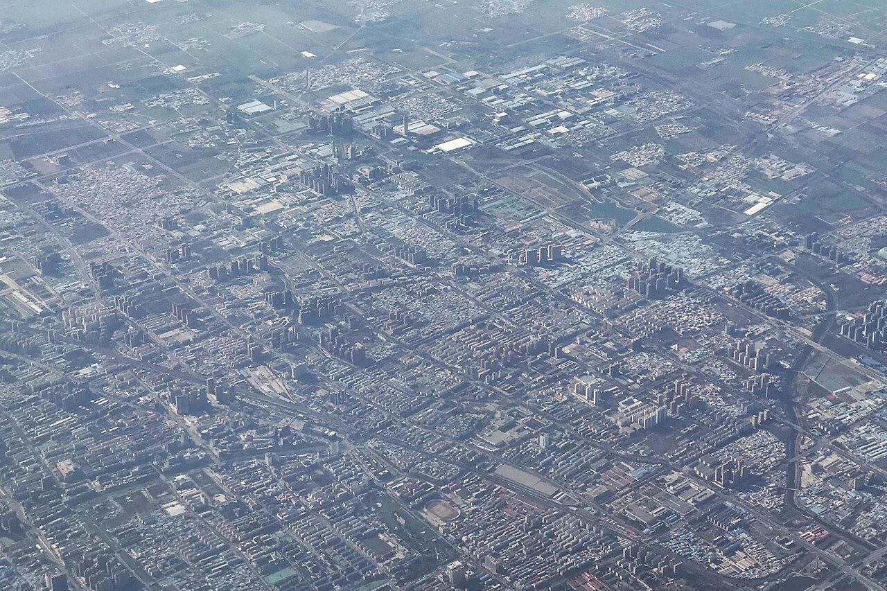
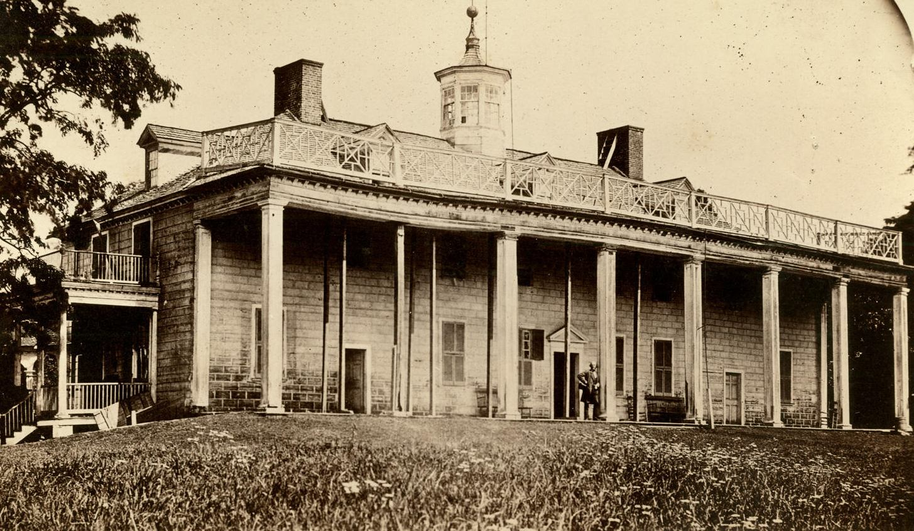
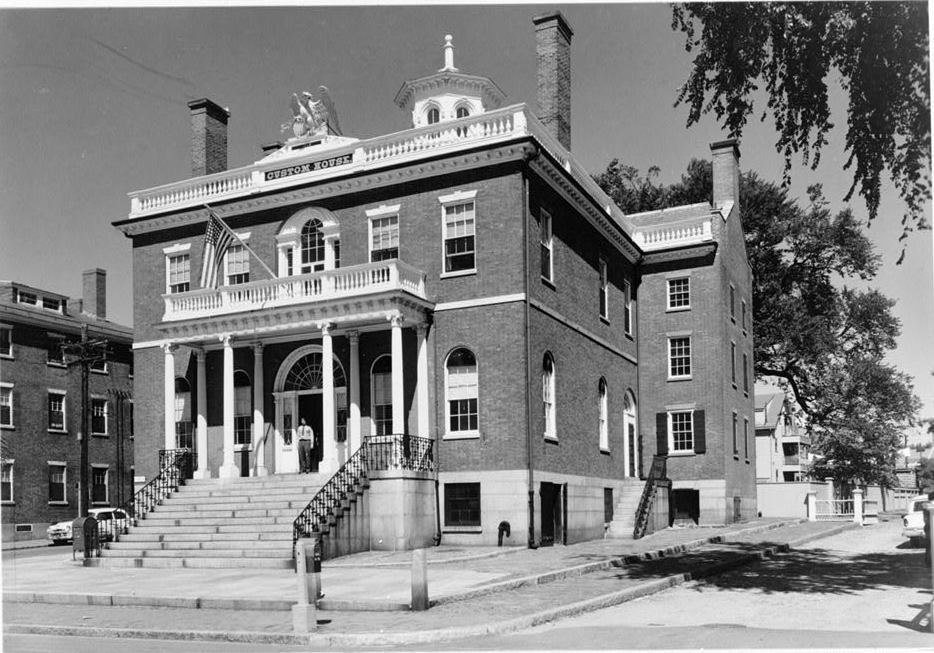
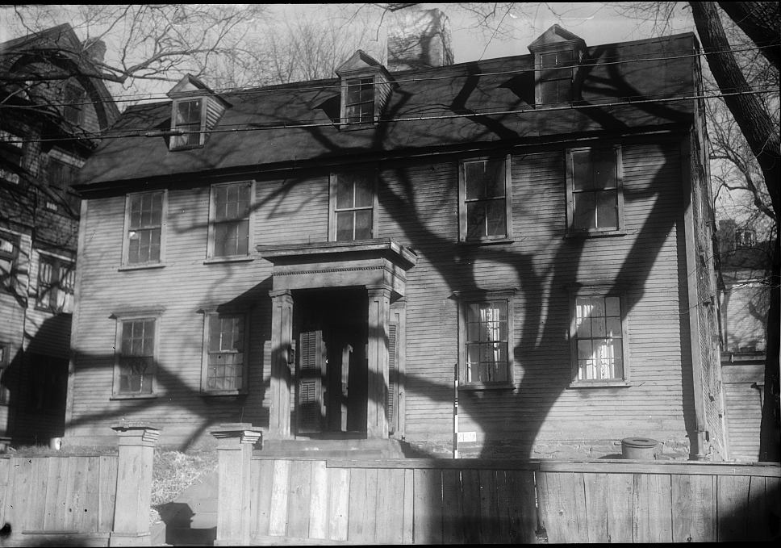
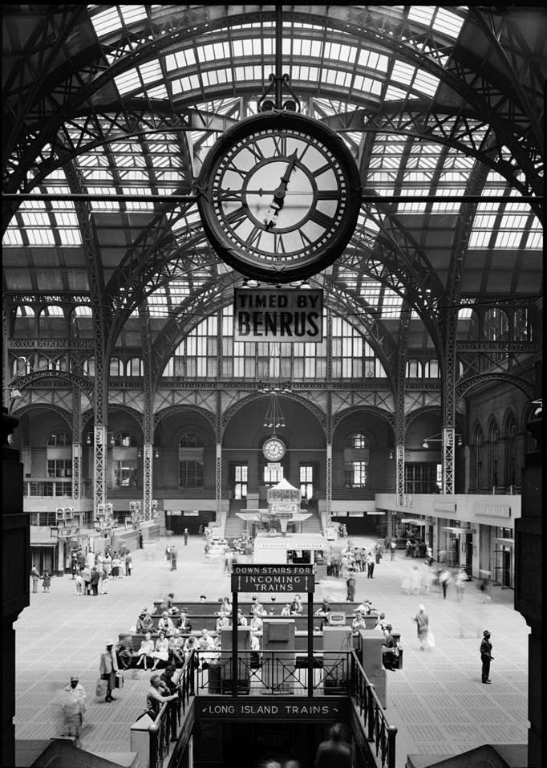
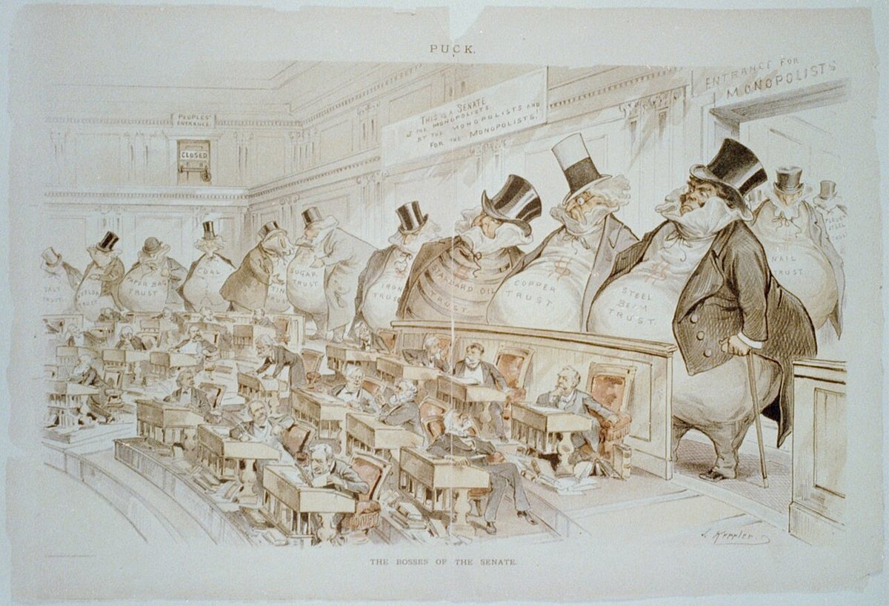

Hao Xu徐昊徐昊Hao Xu
- 美国制度史与立法史研究U.S. Institutional & Legislative HistoryU.S. Institutional & Legislative History美国制度史与立法史研究
- 数字人文Digital HumanitiesDigital Humanities数字人文
- 历史科普Public HistoryPublic History历史科普
- 个人软件开发Independent Software DevelopmentIndependent Software个人软件开发
Academic Research学术研究
Source Notes史料札记
Digital Humanities数字人文
Manuscript Review Agent历史学论文审查 Agent
Checks whether a paper’s sources and arguments hold up.逐条检查论文的史料与论证是否成立。

Getting to Know Xuchang了解许昌
A site on one Chinese city: travel, returning home, history, and its plans and policies, 2019–2035.一座城市的网站：游许昌、回许昌、读许昌，以及 2019—2035 年的规划与政策图谱。




Preservation Data Timeline美国历史保护数据时间线
From an 1853 open letter to the 1966 National Historic Preservation Act: filter by level of government, open any event for its source.从 1853 年的一封公开信到 1966 年《国家历史保护法》：按政府层级筛选，点开任一事件读出处。
Learn more了解更多Statute Text Comparator立法文本对比器
Two versions of a statute side by side, with the added and removed words marked.把一部法的两个版本并排，删去和新增的词句一眼可见。
Try it试一试Data and tools数据与工具CBDBCHGISDILACrossrefOpenAlex
Public History历史科普
The Pinnacle of Power《权力之巅》
American presidents as the thread through the history of power, institutions and constitutional government.以美国总统为线索，讲述权力、制度与宪政治理的历史。
About 355,000 views on the Biden episode.拜登专题播放约 35.5 万。
Watch观看视频The Pinnacle of Power: Side Stories《权力之巅》番外
Looking beyond the United States, at the leaders of other countries.把目光移出美国，讲述世界各国领导人的权力之路。

Trusts《托拉斯》
Taking the United Fruit Company and others as examples, how big business and politics became entangled.以联合果品公司等为例，讲述大企业与政治的交织。
The Final Gavel《一槌定音》
On the U.S. Supreme Court, and how the judicial power has the last word.聚焦美国最高法院，讲述司法权如何落槌定音。
Storms on Capitol Hill《国会山风云》
On legislation in Congress, and the bargaining behind each bill.聚焦国会立法，讲述法案背后的博弈与交锋。